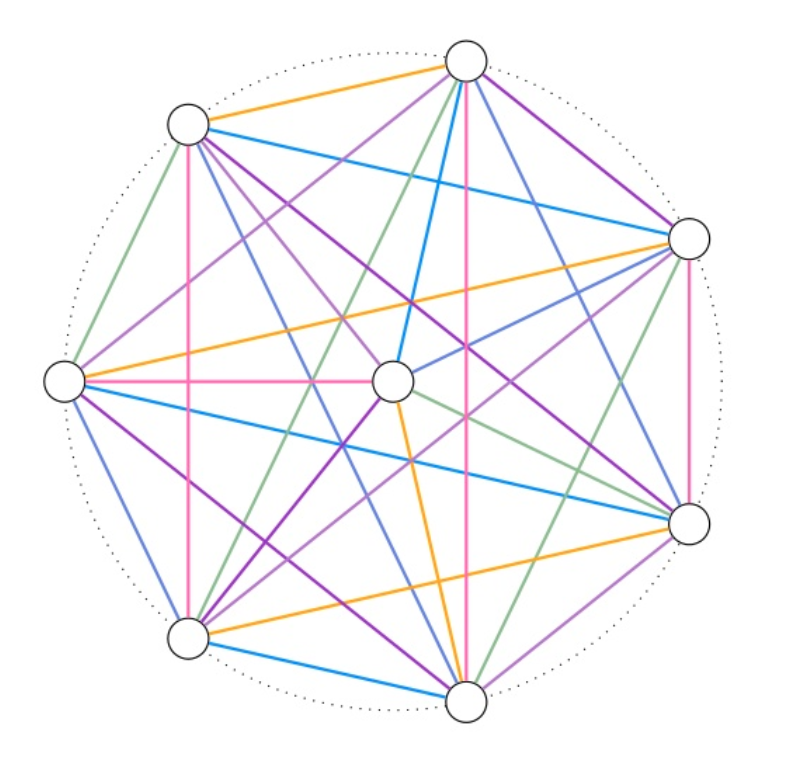

Neeldhara Misra
Smt. Amba and Sri. V S Sastry Chair Associate Professor
Computer Science and Engineering at IIT Gandhinagar
(she/her)
Blog ⸱ Mastodon ⸱ DBLP ⸱ Contact
My broad research interests include — in no particular order: algorithm design, computational social choice, combinatorial games. You can find out more about my work here.
Recent PCs: FSTTCS 2024 (also co-organizing), Compute 2024 (also co-organizing), IJCAI 2024, ADT 2024, CALDAM 2024, FUN 2024, IWOCA 2024, IJCAI 2024, AAMAS 2023, CALDAM 2023, FSTTCS 2023, FUN 2022, MFCS 2022, IPEC 2022, IJCAI 2022, Compute 2022, CALDAM 2023, IPEC 2023 (co-chair with Magnus Wahlström)
Latest News
Latest Posts
| 01 Oct, 2023 | Exportober 2023 | workflows |
| 30 Jul, 2023 | Building Interactives | exposition |
| 26 Mar, 2023 | 13 Sheep | games exposition |
| 03 Oct, 2021 | Two approaches to the 15 puzzle | puzzles exposition |
| 12 Sep, 2021 | Actually Building a Website with Notion | notion workflows websites |
In case you care for (sporadic) updates by email.
I mostly plan to write some notes to self: I can’t imagine that you’d be interested, but if, for some reason, you are, you are welcome.